Odo keeps track of your delivery and rideshare shifts, the kilometres you drive and your work costs. At tax time it gives you everything your accountant or myTax needs. Setting it up takes about 5 minutes.
Your car's odometer reading (the km number on your dashboard)
There's nothing to download from the App Store or Google Play. Odo opens from a link and then sits on your home screen like a normal app. It's free to use.
1
Open the Odo link
On your phone, open inova07.github.io/odo.
iPhone: use Safari (the blue compass). Android: use Chrome or Samsung Internet.
A short welcome tour starts. Pick your language first, then tap Show me or Skip.
Do this once. After that, Odo opens with one tap, full screen, and works without signal.
iPhone (Safari)
Tap the Share button at the bottom of the screen (a square with an arrow pointing up).
Scroll down and tap Add to Home Screen.
Tap Add in the top right corner.
Open Odo from the new Od icon on your home screen from now on.
Android (Chrome)
Tap the ⋮ menu (three dots, top right).
Tap Install app or Add to Home screen.
Tap Install or Add.
Open Odo from the new icon on your home screen.
Android (Samsung Internet)
Tap the ≡ menu (three lines, bottom right).
Tap Add page to, then Home screen.
Tap Add.
See a small install icon in the address bar? Tapping it does the same thing.
💡 Can't find the button? Save Odo as a bookmark instead. iPhone: Share → Add Bookmark. Chrome: ⋮ → tap the star. Samsung Internet: ≡ → Add page to → Bookmarks.
3
Create a free account
Without an account, your records live only on this phone. With one, Odo backs everything up, and you can sign in on a new phone and get it all back.
Tap the person icon at the top right.
Tap New account.
Type your email and make a password (at least 6 characters).
Tap Create account. If Odo asks, open the email from Odo and tap the link to confirm, then sign in.
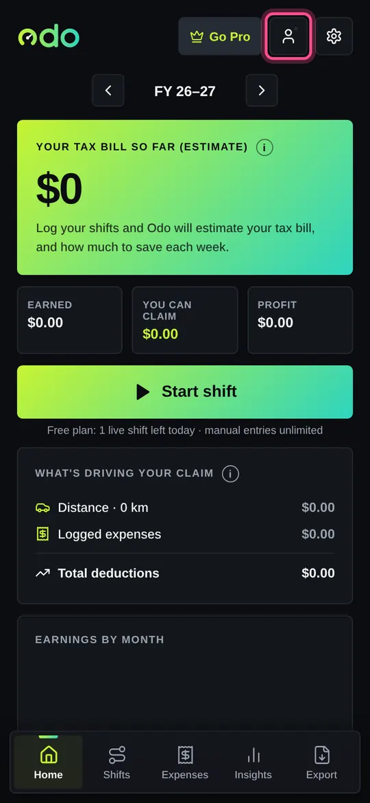
1. Tap the person icon
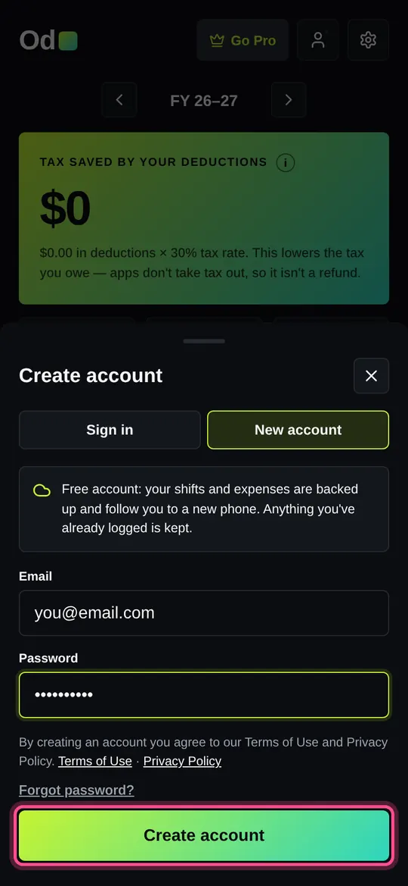
2. New account → Create account
💡 New phone? Open the link, tap the person icon, choose Sign in and use the same email and password. Your records come back. A green dot on the person icon means you're backed up.
4
Tell Odo about you (1 minute)
Tap the gear icon at the top right to open Settings.
Your vehicles: choose Car, Motorbike or Bicycle.
Region: leave it on Australia.
Expected total income this year: a rough guess of everything you'll earn, including any other job. Odo uses it to work out your tax rate.
Tap Save settings at the bottom.
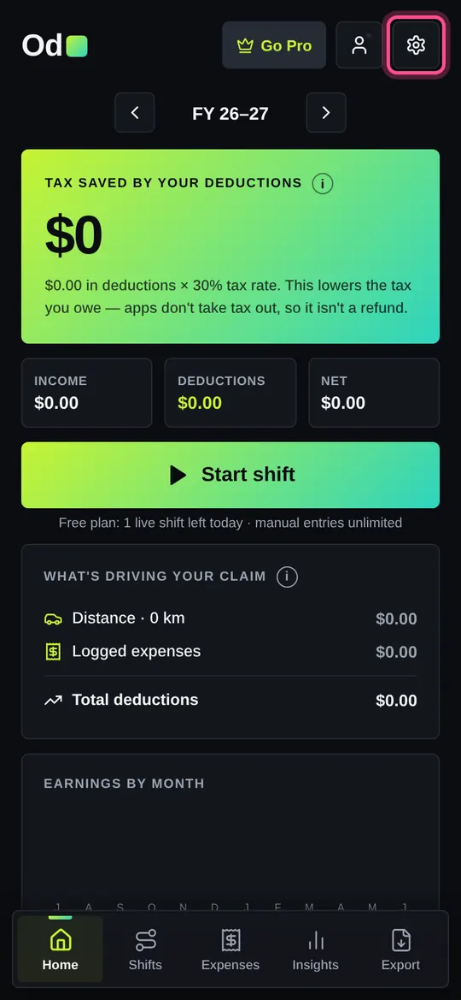
1. Tap the gear icon
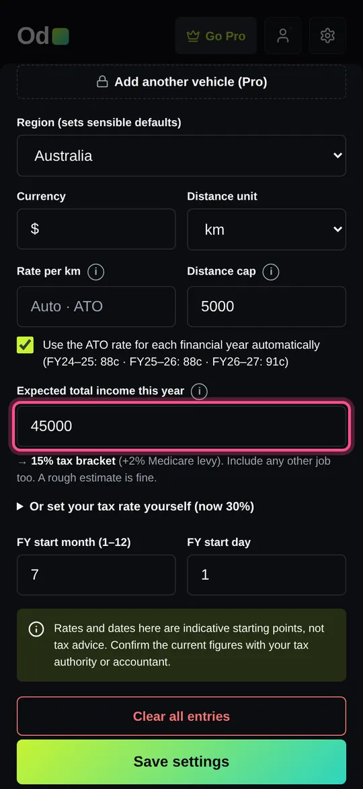
2. Add your expected income
💡 On a bike or motorbike? Odo switches to Rider mode. The km rate is only for cars, so your claim comes from your costs: phone, repairs, batteries, bags and gear.
5
Log every shift
Your kilometres are usually your biggest tax claim. Two taps per shift is all it takes.
Starting work: tap Start shift, pick the app (Uber, DoorDash…), type your odometer number, tap Clock on. You can close Odo; the timer keeps going.
Finished: tap End shift, type the new odometer number and what you earned, then tap Save shift.
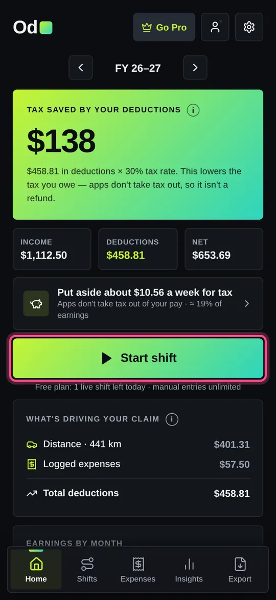
1. Tap Start shift
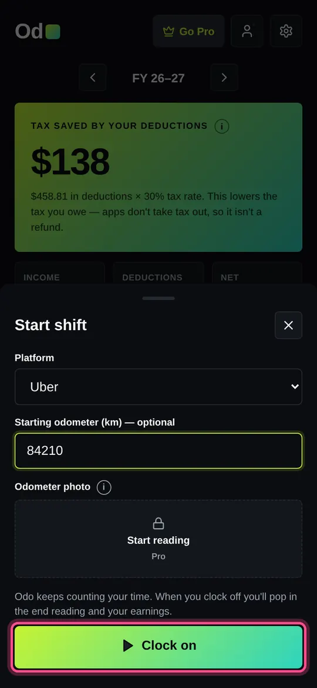
2. Odometer → Clock on
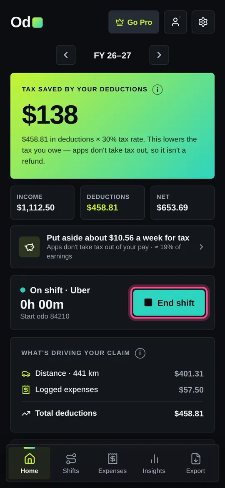
3. After work: End shift
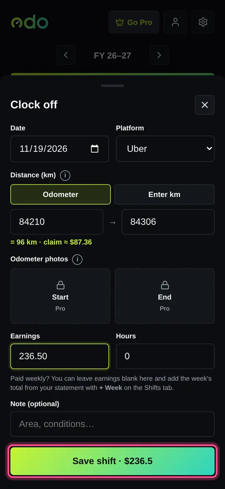
4. End odometer + earnings → Save
PROPhotograph your odometer
With Odo Pro, tap Start reading when you start a shift to snap your odometer, and add an End photo when you finish. Each photo is saved with the shift, with the date and time, and backed up to your account.
Why this matters: the ATO can ask you to show how you worked out your work kilometres, and you must keep your records for 5 years after you lodge. A photo from the start and end of every shift is strong proof that's hard to argue with. You'll also never lose or mistype a reading, even if you change phones. At tax time, Export → Download photos gives your tax agent every photo in one ZIP.
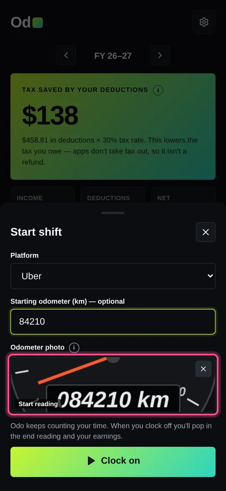
Your odometer photo, saved with the shift
💡 Forgot to start? Shifts tab → + Shift and type it in afterwards. Paid weekly? Shifts tab → + Week and copy the total from your weekly statement. Only work km count: the drive from home to your first job may not.
6
Add your work costs
Go to the Expenses tab and tap Add expense.
Pick a category (for example Phone & internet) and type the amount.
Slide Business use to how much is for work. Phone used 70% for deliveries? Set 70%.
Tap Save.
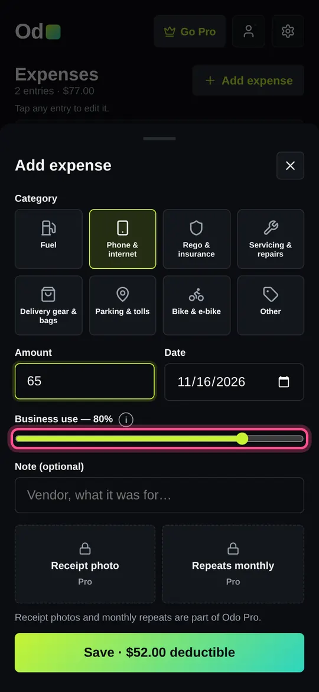
Set how much is for work
⚠️ Driving a car? Don't add fuel, rego, insurance or servicing. The ATO km rate (91c per km in 2026–27) already covers them. Parking and tolls are fine to add.
7
Check your numbers
Your tax bill so far
A rough estimate of the tax you'll owe. Apps don't take tax out of your pay, so you pay it once a year, after 30 June. Every km and work cost you log makes it smaller.
Save each week
Put this much aside every week, so the tax bill in July isn't a shock.
Earned / You can claim / Profit
What you earned, the km and work costs you can claim, and what's left: your profit.
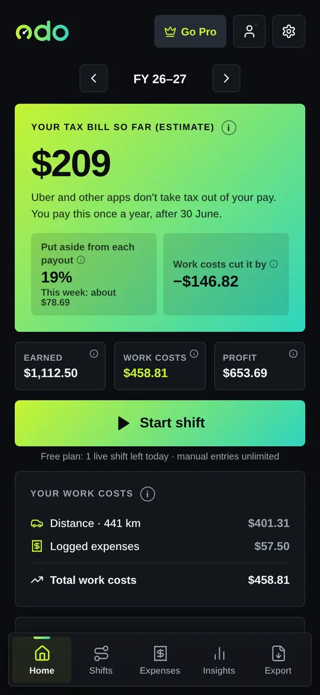
Your year at a glance
💡 Tap any ⓘ icon for a quick explanation.
8
At tax time: export
After 30 June, open the Export tab.
Download your shifts, expenses and summary. They open in Excel or Google Sheets.
Send them to your tax agent, or use the totals in myTax.
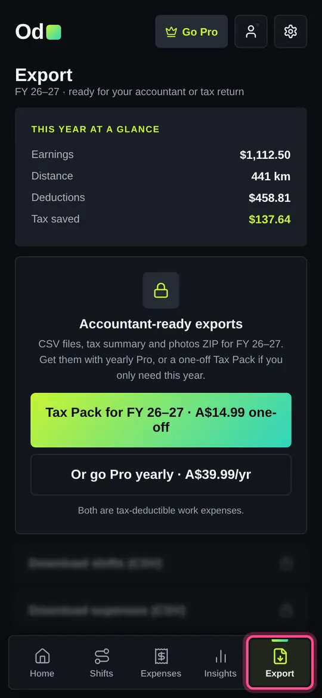
Everything your accountant needs
💡 Exports come with yearly Pro, or buy a one-off Tax Pack (A$14.99) for just one year. Both are work costs you can claim.
About Odo
Hi, I'm Rickie 👋 I work in payroll in Australia, so wages and tax are part of my everyday job.
A lot of my friends drive for Uber and other apps. At tax time, most of them had no record of their expenses, or of the kilometres they could claim to reduce their tax. It's a shame, because it's their hard-earned money, and every dollar counts.
So I built Odo: a simple way to log every shift, every kilometre and every work cost, so everything is ready when tax time comes.
Independent. Odo isn't connected to Uber, DoorDash, Menulog or the ATO.
Need help?
Full guide: Settings → How to use Odo, or the online guide.
Questions? Settings → Help & support. If you're signed in, we reply right there in the app.
Odo is a record-keeping tool, not tax advice. Check current rules at ato.gov.au or with a registered tax agent. · Updated 17 November 2026